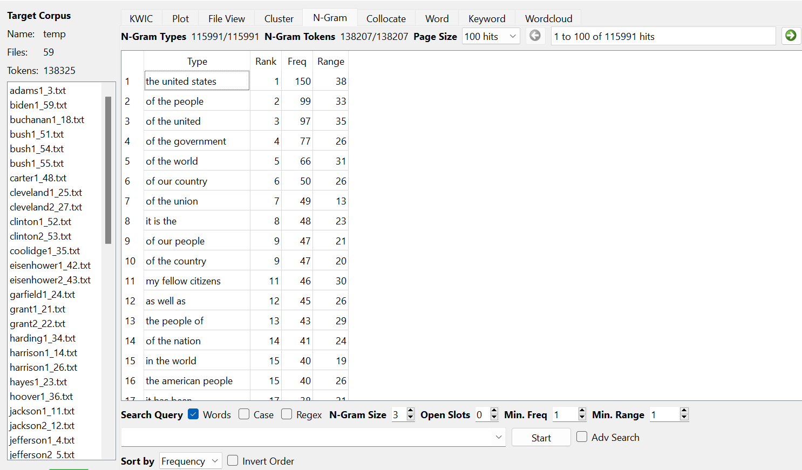
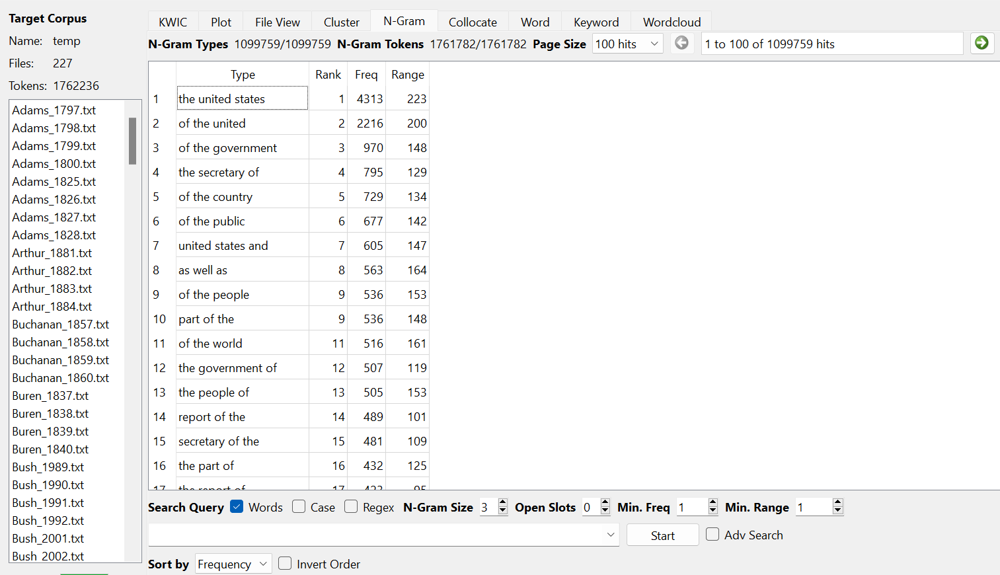

Comparing Inaugural Addresses with State of the Union Speeches

This image shows some of the 3 grams that are frequently used throughtout the history of inaugural addresses.

This image shows the 3 grams found throughout different presidents state of the unions over time.
When it comes to comparing these two texts it become pretty apparent that there are distinct similarities between
the two which makes sense. Both use the phrase "the United States" a ton considering both speeches are addressed to the
entire nation.